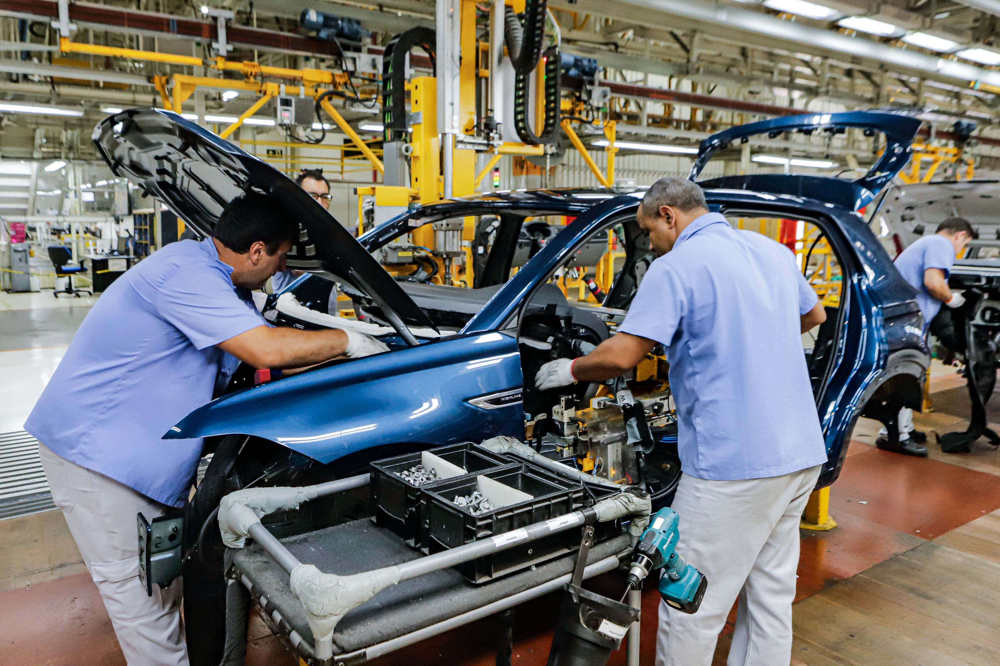
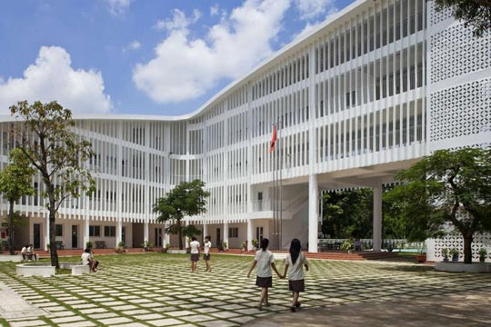
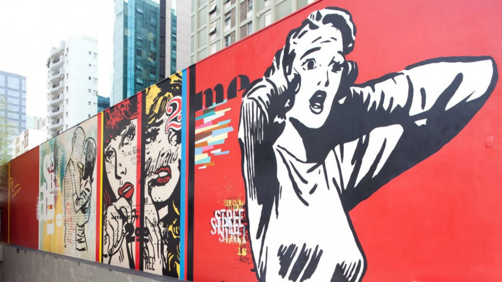
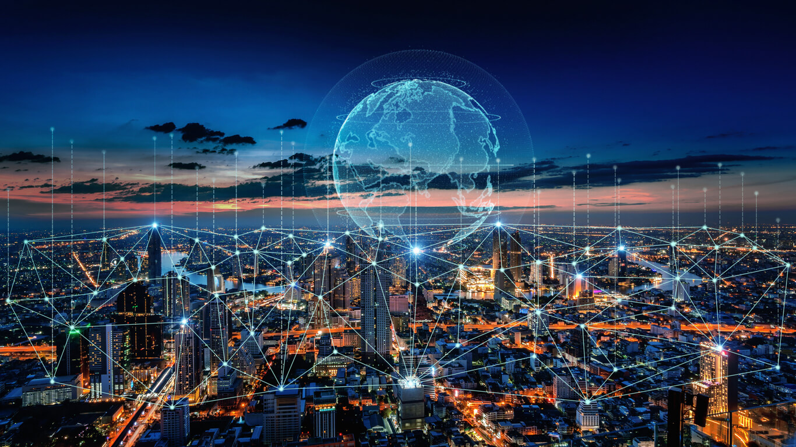

🍕 Comida
Na cidade, o acesso à comida é muito diversificado. Há mercados, feiras, restaurantes, pizzarias, hamburguerias, padarias e até serviços de entrega via aplicativo. Moradores urbanos têm acesso fácil a comidas de várias culturas.
👗 Roupas
A moda urbana é influenciada por redes sociais, vitrines e celebridades. O estilo varia entre o casual, formal, esportivo e de luxo. Lojas de roupas são facilmente encontradas e o consumo é mais dinâmico.
💼 Trabalho
As cidades oferecem empregos em comércio, escritórios, fábricas, tecnologia e serviços. O trabalho é mais intelectual e diversificado, embora o desemprego e a informalidade também sejam frequentes.
 📚 Educação e Acesso
A cidade oferece mais acesso a escolas, universidades, cursos técnicos e bibliotecas. A internet de alta velocidade favorece o aprendizado e o acesso à informação.
 🎭 Cultura
A vida cultural é intensa, com cinemas, teatros, shows, museus, festivais e eventos variados. A diversidade cultural urbana é muito rica.
 📱 Tecnologia
Cidades são polos de inovação. Aplicativos, wi-fi público, transporte digital, bancos online e projetos de cidades inteligentes estão presentes no cotidiano urbano.
